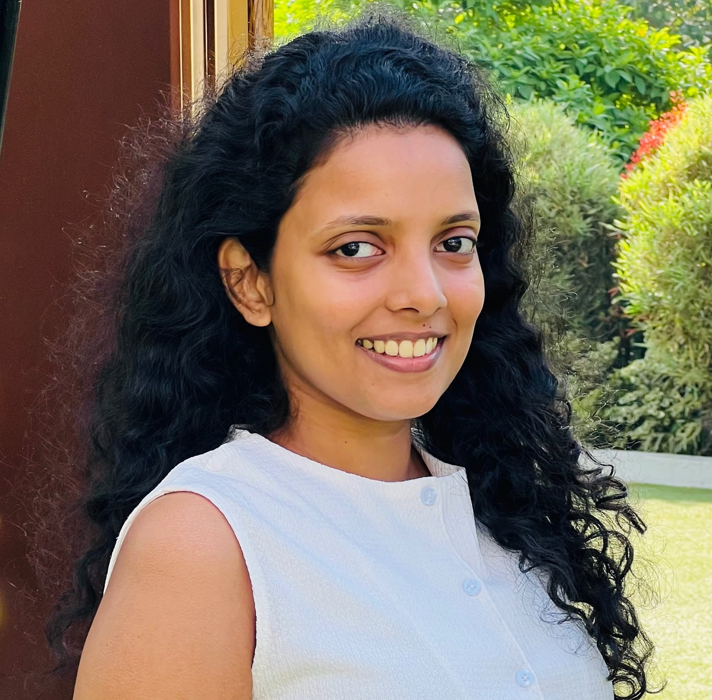

AI Researcher · Software Engineer · Academic Tutor
MSc AI candidate at University of Moratuwa. Dual honours graduate in Computer Science and Software Engineering. Researching catastrophic forgetting in neural networks. Based in Canberra, ACT.

01 — About
I am a customer-focused technology professional combining deep technical expertise with strong stakeholder management skills. Currently pursuing an MSc in Artificial Intelligence at the University of Moratuwa while working as an Academic Tutor at the Australian National University in Canberra.
My research focuses on understanding and mitigating catastrophic forgetting in convolutional neural networks — a fundamental challenge in continual learning and artificial intelligence. This work has led to two publications and a Best Oral Presenter award at ICIET 2024.
With dual honours degrees in Computer Science and Software Engineering, I bring both theoretical rigour and practical engineering experience to every project, with proficiency in Python, Java, and JavaScript across a range of full-stack and AI applications.
Research Interests
02 — Education
03 — Experience
04 — Research
05 — Projects
06 — Skills
07 — Recognition
08 — Contact
I'm open to research collaborations, academic opportunities, and interesting projects in AI and software engineering. Feel free to reach out.